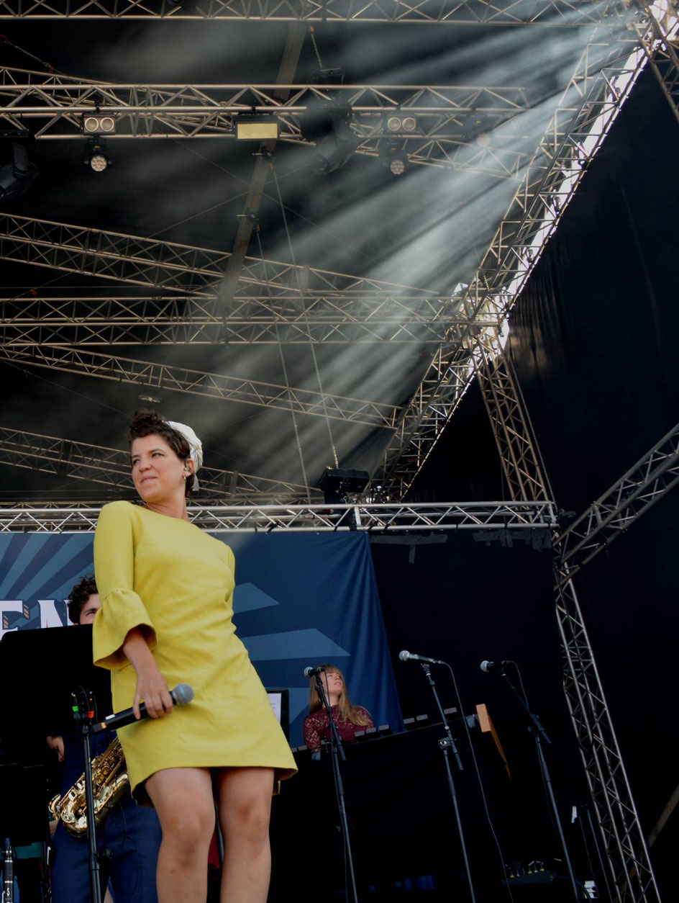

Laura fortæller med stor entusiasme omkring de
fremtidige skridt for hendes karriere i musik.
Hendes fremadrettede karriere, er tredelt på
nuværende tidspunkt, idet hun både har sit eget
kor, hvor hun gerne vil indføre mere originalt
musik, og lave sit eget. Hun er også en del af
et band ved navn Luftens helte, her bliver der
sunget Disney klassikere, og de har et klart mål,
om at blive et fast festivals navn indenfor få år.
Hendes tredje og mest spændende projekt, er hendes
eget solo projekt som hun arbejder på højtryk, for at
få udgivet. Dette vil give en mere personlig vinkel på
musikken, og skabe hende flere muligheder i fremtiden.
"Jeg kunne ligesom mærke, det er virkelig fedt at synge her sammen.
Men jeg skal stå her selv på et tidspunkt (Roskilde festival)“